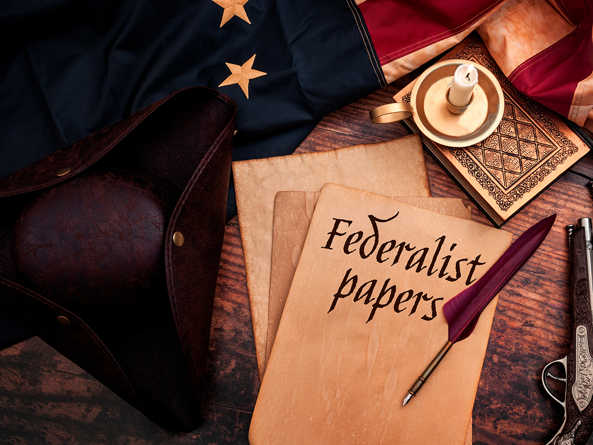

The Constitutional Convention was driven by leaders who felt the Articles of Confederation were wholly unsuited for building a strong nation into the future. President Washington and his Secretary of Treasury Alexander Hamilton saw firsthand the weakness of the federal government under the Articles and worked with others to set about redesigning the plan of government. The Constitutional Convention immediately started a debate about the nature of the future government that would last past the convention itself.

Those arguing for a stronger central government became known as the Federalists (and would later form those that made up the Federalist Party). Well-known figures such as Alexander Hamilton, John Jay, and James Madison published a series of essays known as The Federalist Papers arguing in support of the ratification of a new constitution. The Federalists favored a more powerful executive (president) and a more centralized approach to the national government, unified currency, taxation powers, the ability to raise and maintain military forces, and a unified fiscal approach to government financing and banking.
Those who were skeptical of a newly powerful government and would hesitate on ratification became known as the Anti-Federalists. They feared an overreaching federal government and preferred that the bulk of power remain with the states. The Anti-Federalists were particularly concerned with the protection of individual rights and wanted to see limits on the power of the future federal government. They felt that the new constitution gave too much power to the national government, allowed for a standing federal army in peacetime, gave too much power to the executive branch, and lacked a bill of rights to guarantee certain fundamental protections to the individuals and the states.
| Federalists | Anti-Federalists |
|---|---|
|
Proposal: Ratify a new constitution |
Proposal: Prevent ratification of a new constitution |
|
In favor of:
|
In favor of:
|
|
Supporters: President Washington, Alexander Hamilton, John Jay, and James Madison |
Supporters: Patrick Henry, Thomas Jefferson, Samuel Adams, and George Mason |
The Anti-Federalists’ concerns held up ratification until a Bill of Rights was included as the first 10 Amendments to the Constitution. The Anti-Federalists took their concerns to the public with their own series of articles and essays. During the nearly two-year process before the ratification of the Constitution in 1788, the Anti-Federalists would need to be convinced to sign on to the new government.